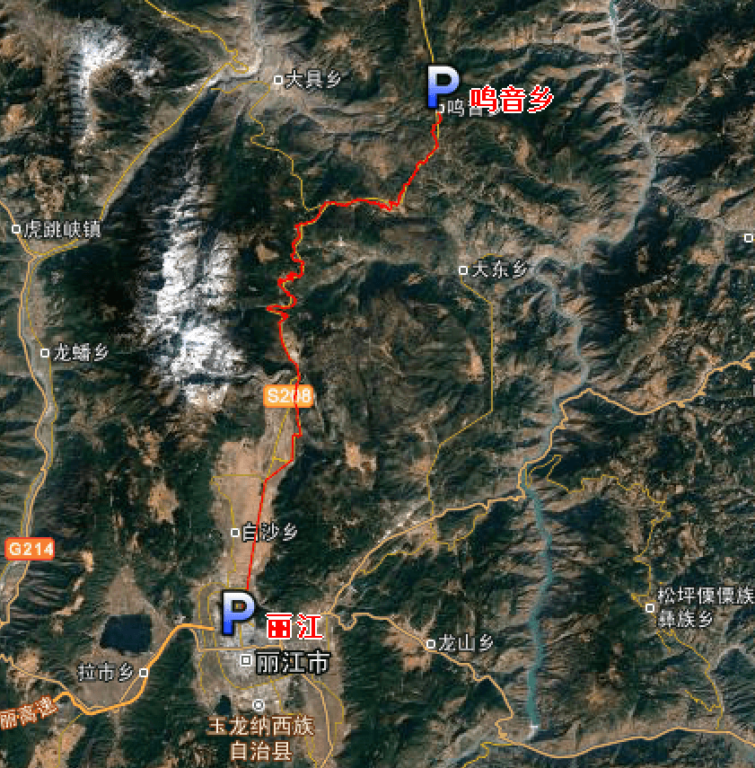

| | | | | |
| - | - | - | - | - |
|<b>别名</b>|云、滇||<b>著名景点</b>|石林、丽江古城、崇圣寺三塔、三江并流等|
|<b>行政区类别</b>|省||<b>机 场</b>|昆明长水国际机场、丽江三义国际机场|
|<b>所属地区</b>|中国 西南||<b>火车站</b>|昆明站、曲靖站、大理站、丽江站|
|<b>下辖地区</b>|昆明、昭通、曲靖、玉溪、保山等||<b>车牌代码</b>|云A-云S（无云B、I、T、U、V、W、X、Y、Z）|
|<b>电话区号</b>|0871||<b>GDP</b>|14869.95亿元（2016年） |
|<b>邮政区码</b>|650000至674600||<b>人均GDP</b>|31397元（2016年）|
|<b>地理位置</b>|中国最西南方，北回归线穿过||<b>著名高校</b>|云南大学、昆明理工大学等|
|<b>面 积</b>|39万平方千米||<b>旅游城市</b>|大理、丽江、香格里拉、景洪等|
|<b>人 口</b>|4770.5万人（2016年）||<b>省委书记</b>|陈豪|
|<b>方 言</b>|西南官话等||<b>省 长</b>|阮成发|
|<b>气候条件</b>|亚热带季风气候、热带季风气候||-|-|
| <b>云南生活文化</b> | <b>云南特色文化</b> | <b>云南曲艺文化</b> | <b>云南建筑文化</b> | <b>云南宗教文化</b> |
| - | - | - | - | - |
| <a href="javascript:;" onclick="live(this);">习俗/民俗</a> | <a href="javascript:;" onclick="feature(this);">云南手工工艺品文化</a> | <a href="javascript:;" onclick="art(this);">云南滇剧</a> | <a href="javascript:;" onclick="building(this);">云南四方街</a> | - |
| <a href="javascript:;" onclick="live(this);">方言文化</a> | <a href="javascript:;" onclick="feature(this);">云南茶文化</a> | <a href="javascript:;" onclick="art(this);">云南傣剧</a> | <a href="javascript:;" onclick="building(this);">云南彝族土掌房</a> | - |
| <a href="javascript:;" onclick="live(this);">节日文化</a> | <a href="javascript:;" onclick="feature(this);">云南东巴文化</a> | <a href="javascript:;" onclick="art(this);">云南关索戏</a> | <a href="javascript:;" onclick="building(this);">傣族竹楼</a> | - |
| <a href="javascript:;" onclick="live(this);">嫁娶文化</a> | - | <a href="javascript:;" onclick="art(this);">云南铜鼓舞</a> |-|-|
| <a href="javascript:;" onclick="live(this);">饮食文化</a> | - | <a href="javascript:;" onclick="art(this);">彝族左脚舞</a>|-|-|
| <a href="javascript:;" onclick="live(this);">云南禁忌</a> | - |<a href="javascript:;" onclick="art(this);">佤族竹竿舞</a>| -|-|
## <i class="fa fa-file-text-o"></i>&nbsp;目录（Table of Contents）
+ [I. 总路线图](#one)
+ [II. 景点](#two)
+ [III. 路线规划](#three)
- [1、盐井乡 - 飞来寺](#1)
- [2、飞来寺 - 书松村](#2)
- [3、书松村 - 香格里拉市](#3)
- [4、香格里拉市 - 宝山村](#4)
- [5、宝山村 - 丽江市](#5)
- [6、丽江 - 鸣音乡](#6)
- [7、鸣音乡 - 奉联村](#7)
- [8、奉联村 - 卢沟湖](#8)
- [9、卢沟湖 - 宁蒗县](#9)
- [10、宁蒗县 - 清水河](#10)
- [11、清水河 - 四家村](#11)
- [12、四家村 - 大理市](#12)
- [13、大理市 - 洱海](#13)
- [14、洱海 - 祥云县](#14)
- [15、祥云县 - 沙桥镇](#15)
- [16、沙桥镇 - 罗川镇](#16)
- [17、罗川镇 - 昆明市](#17)
- [18、昆明市 - 陆良县](#18)
- [19、陆良县 - 罗平县](#19)
- [20、罗平县 - 安龙县](#20)
<h2 id="one"><i class="fa fa-circle-o-notch fa-spin"></i>&nbsp;总路线图</h2>
<h2 id="two"><i class="fa fa-star-o"></i>&nbsp;景点</h2>
<h2 id="three"><i class="fa fa-spinner fa-pulse"></i>&nbsp;路线规划</h2>
<h4 id="1">1、盐井乡 - 飞来寺&nbsp;&nbsp;<i class="fa fa-bicycle fa-2x"></i></h4>
<h4 id="2">2、飞来寺 - 书松村&nbsp;&nbsp;<i class="fa fa-bicycle fa-2x"></i></h4>
<h4 id="3">3、书松村 - 香格里拉市&nbsp;&nbsp;<i class="fa fa-bicycle fa-2x"></i></h4>
<h4 id="4">4、香格里拉市 - 宝山村&nbsp;&nbsp;<i class="fa fa-bicycle fa-2x"></i></h4>
<h4 id="5">5、宝山村 - 丽江市&nbsp;&nbsp;<i class="fa fa-bicycle fa-2x"></i></h4>
<h4 id="6">6、丽江 - 鸣音乡&nbsp;&nbsp;<i class="fa fa-bicycle fa-2x"></i></h4>

<h4 id="7">7、鸣音乡 - 奉联村&nbsp;&nbsp;<i class="fa fa-bicycle fa-2x"></i></h4>
<h4 id="8">8、奉联村 - 卢沟湖&nbsp;&nbsp;<i class="fa fa-bicycle fa-2x"></i></h4>
<h4 id="9">9、卢沟湖 - 宁蒗县&nbsp;&nbsp;<i class="fa fa-bicycle fa-2x"></i></h4>
<h4 id="10">10、宁蒗县 - 清水河&nbsp;&nbsp;<i class="fa fa-bicycle fa-2x"></i></h4>
<h4 id="11">11、清水河 - 四家村&nbsp;&nbsp;<i class="fa fa-bicycle fa-2x"></i></h4>
<h4 id="12">12、四家村 - 大理市&nbsp;&nbsp;<i class="fa fa-bicycle fa-2x"></i></h4>
<img data-src="../imgs/region-line/yunnan/12t.png" title="12、四家村 - 大理市"/>
<h4 id="13">13、大理市 - 洱海&nbsp;&nbsp;<i class="fa fa-bicycle fa-2x"></i></h4>
<img data-src="../imgs/region-line/yunnan/13.png" width="61%" height="40%" title="13、大理市 - 洱海"/>
<h4 id="14">14、洱海 - 祥云县&nbsp;&nbsp;<i class="fa fa-bicycle fa-2x"></i></h4>
<h4 id="15">15、祥云县 - 沙桥镇&nbsp;&nbsp;<i class="fa fa-bicycle fa-2x"></i></h4>
<h4 id="16">16、沙桥镇 - 罗川镇&nbsp;&nbsp;<i class="fa fa-bicycle fa-2x"></i></h4>
<img data-src="../imgs/region-line/yunnan/16.png" width="61%" height="40%" title="16、沙桥镇 - 罗川镇"/>
<h4 id="17">17、罗川镇 - 昆明市&nbsp;&nbsp;<i class="fa fa-bicycle fa-2x"></i></h4>
<h4 id="18">18、昆明市 - 陆良县&nbsp;&nbsp;<i class="fa fa-bicycle fa-2x"></i></h4>
<h4 id="19">19、陆良县 - 罗平县&nbsp;&nbsp;<i class="fa fa-bicycle fa-2x"></i></h4>
<h4 id="20">20、罗平县 - 安龙县&nbsp;&nbsp;<i class="fa fa-bicycle fa-2x"></i></h4>